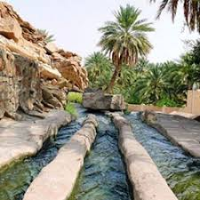

تضم محافظة جنوب الشرقية خمس ولايات هي ولايات : صور والكامل والوافي وجعلان بني بو حسن وجعلان بني بو علي ومصيره ومركز المحافظة ولاية صور.
يبلغ عدد سكان محافظة جنوب الشرقية (188,032) نسمة

محافظة شمال الشرقية:
تتكون محافظة شمال الشرقية من ست ولايات هي : إبراء والمضيبي وبدية والقابل ووادي بني خالد ودماء والطائيين ومركز المحافظة ولاية إبراء.
ويصل عدد سكان محافظة شمال الشرقية (162,482) نسمة.
حظيت محافظة شمال الشرقية بالعديد من مشروعات التنمية التي امتدت إلى مختلف المجالات الصحية والتعليمية والسياحية والطرق والكهرباء والمياه وغيرها.